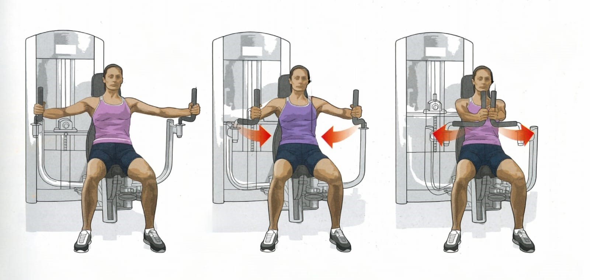
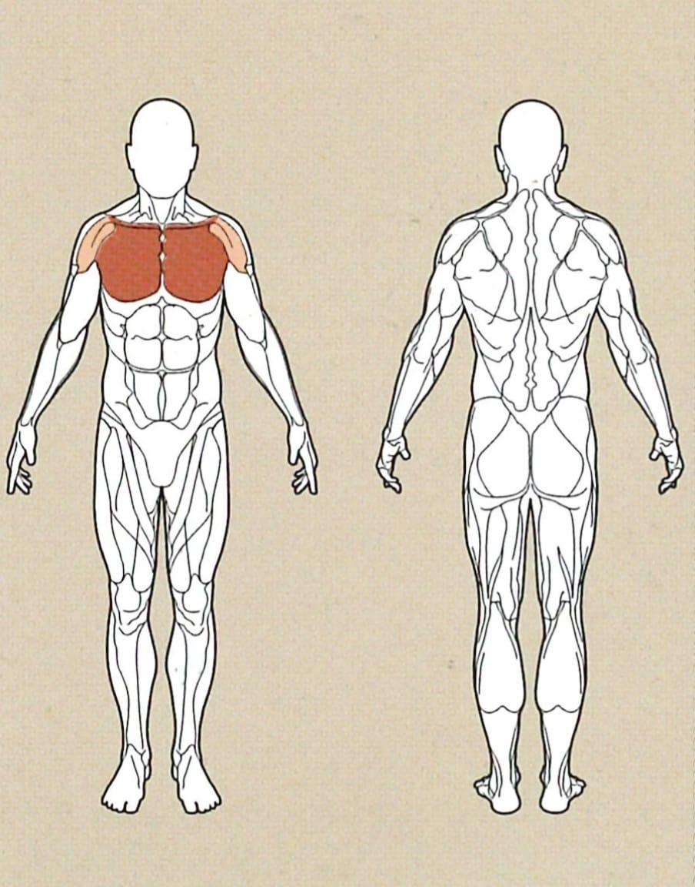
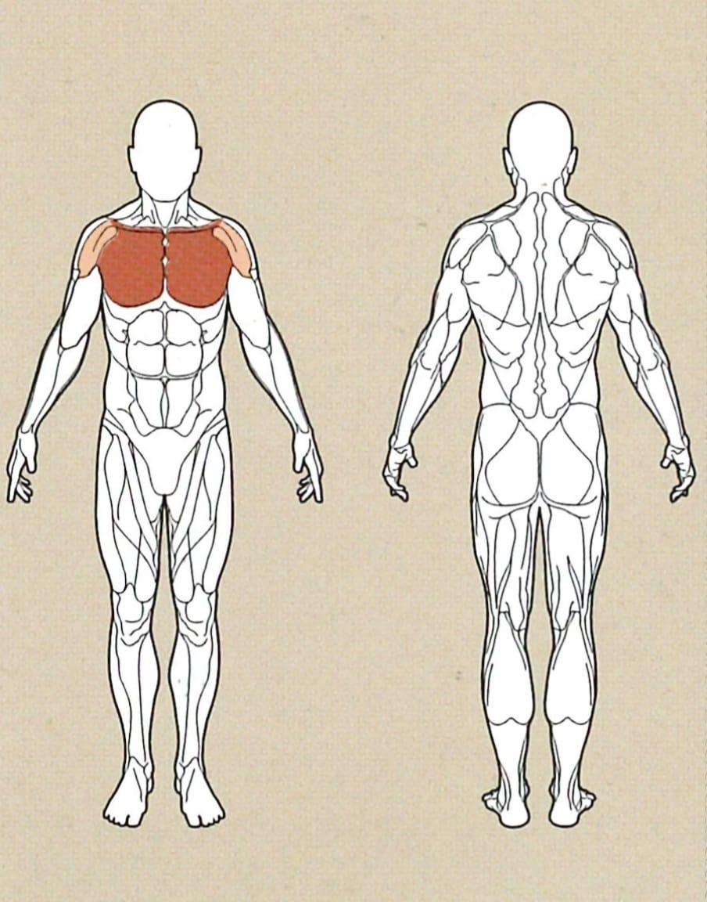

Fliegende Bewegung - Maschine



Ausgangsposition
● Verstelle die Griffe der Maschine so, dass wenn du sie greifst, eine leichte Dehnung in der Brust
spürbar ist.
● Achte darauf dass die Griffe nicht zu weit nach hinten eingestellt sind, da dies deine Form
beeinträchtigen kann.
Ausführung
Winkle deine Arme leicht an, und drücke die Griffe in einer runden Bewegung vor deiner Brust zusammen.
Rückführung
Bewege die Griffe in derselben Bewegung nun wieder zurück in die Ausgangsposition.
Achte darauf, dass deine Arme nicht ganz durchgestreckt sind, und die Bewegung nicht bis ganz an den Anfang ausgeführt wird.